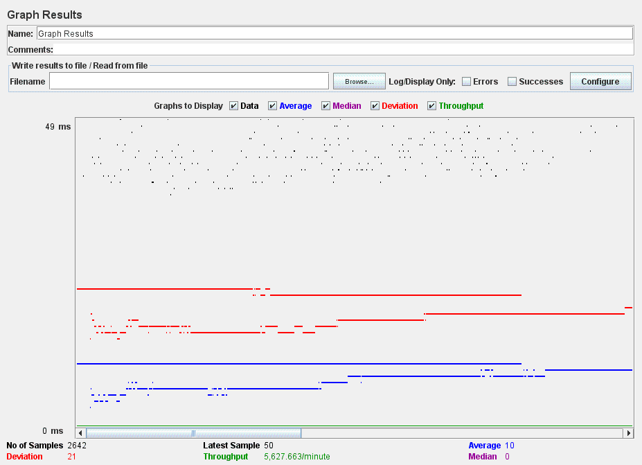
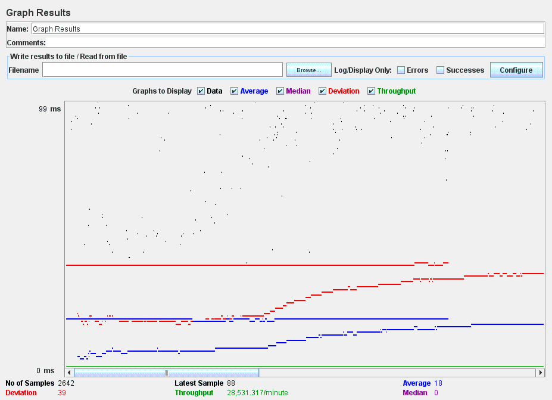
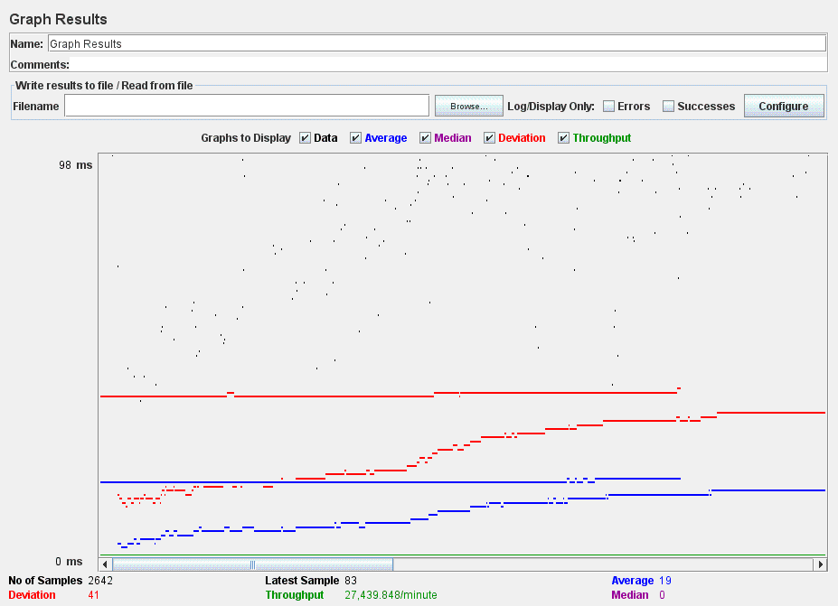

| Single-instance version cases |
Graph Results Screenshot |
Average Query Time(ms) |
Average Search Servlet Time(ms) |
Average JDBC Time(ms) |
Analysis |
| Case 1: HTTP/1 thread |
 |
10 |
8.594523 |
8.5172287 |
This is a baseline test. This is time under no load. |
| Case 2: HTTP/10 threads |
 |
18 |
64.224453 |
63.987669 |
This is a baseline test. This is time under load of ten users. |
| Case 3: HTTPS/10 threads |
|
32 |
59.987632 |
59.891231 |
This shows that https does not have a large effect on preformace |
| Case 4: HTTP/10 threads/No prepared statements |
 |
19 |
63.917463 |
63.783642 |
This shows that prepared statements only have a small preformace imporvoment |
| Case 5: HTTP/10 threads/No connection pooling |
|
40 |
155.614172 |
155.360524 |
This show that connection pooling increases preformace a great deal. |